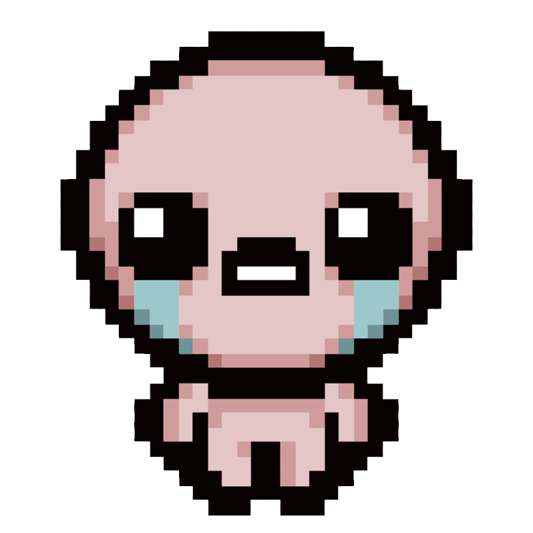
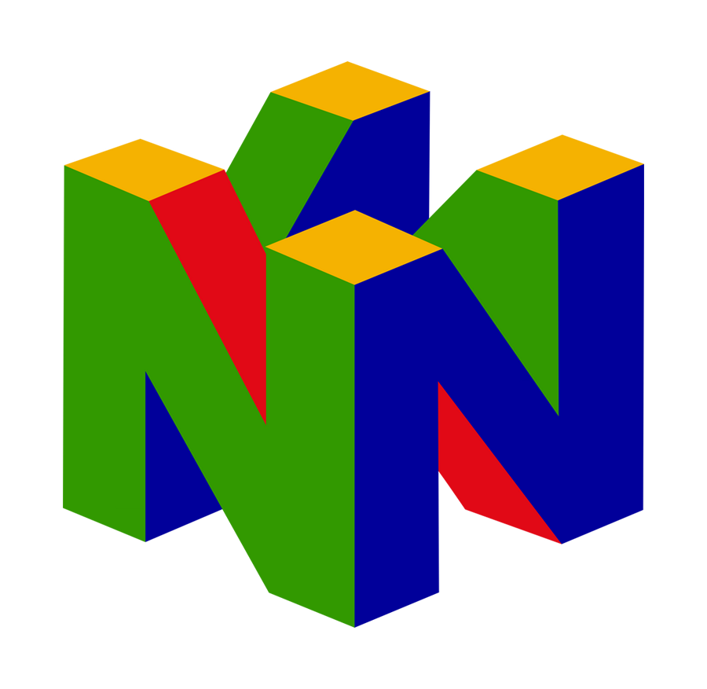
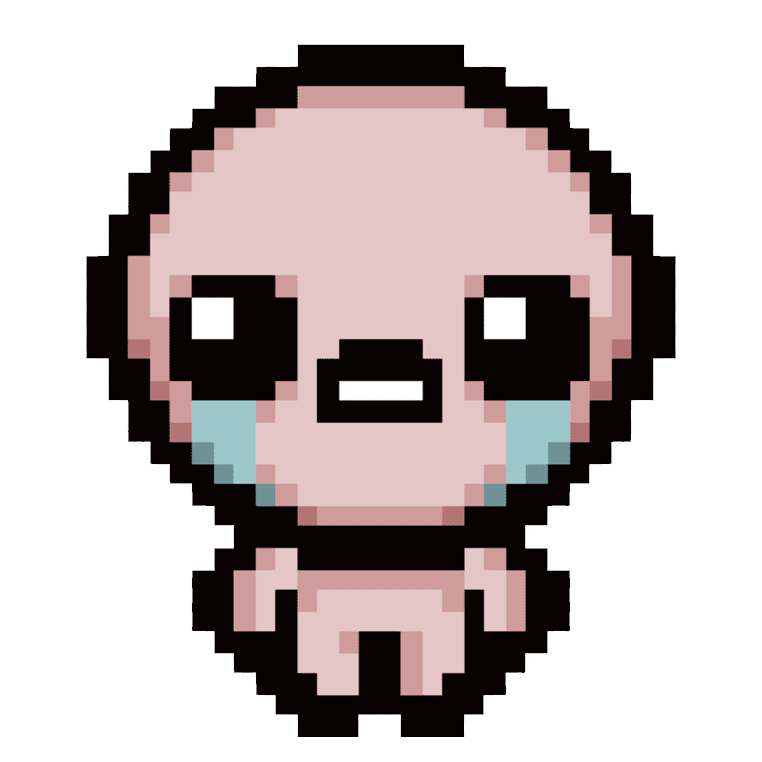
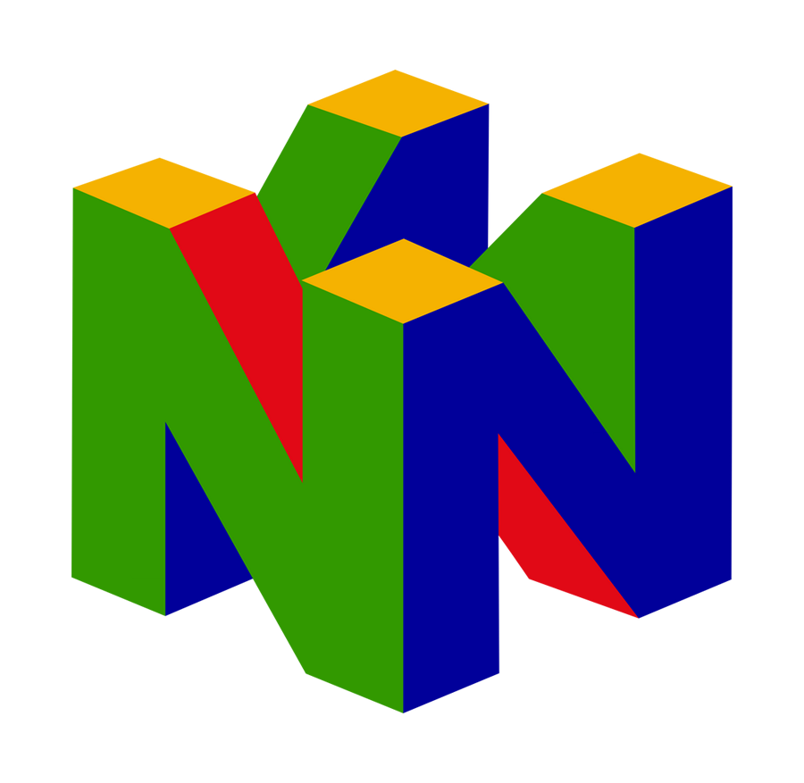
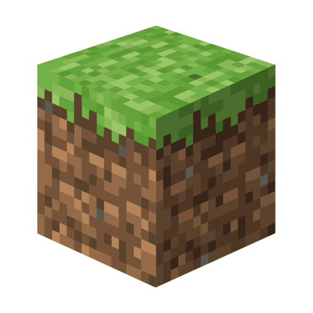
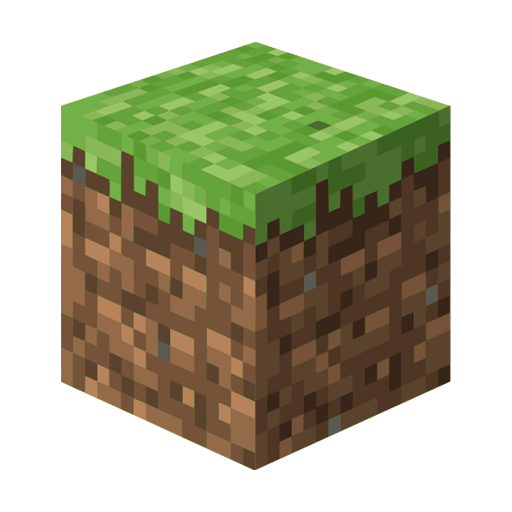

I strike a well-balanced mix in my life: part social butterfly, enjoying nights out with a beer and making new friends, and part huge nerd, deeply fascinated by the intricacies of the gaming world. Traveling and exploring, meeting diverse people along the way, fuels my creativity and serves as a rich source of inspiration for designing compelling experiences in video games. Welcome to my portfolio – I invite you to click around and discover more about my journey and the work that I am passionate about.


I have extensive experience working on a diverse range of educational video games, involved in every stage from concept to launch. My enthusiasm shines in researching, brainstorming ideas, writing Game Design Documents (GDDs), and overseeing both development and production phases. I thrive on turning creative concepts into engaging, educational gaming experiences.
I graduated with a degree in Video Game Design from college in Chile and recently completed a Data Science & AI Bootcamp at Le Wagon Berlin.
Some of my technical Skills I've learnt and different programs I enjoy using for my work.


Gaming interests
 





 

Project description goes here...